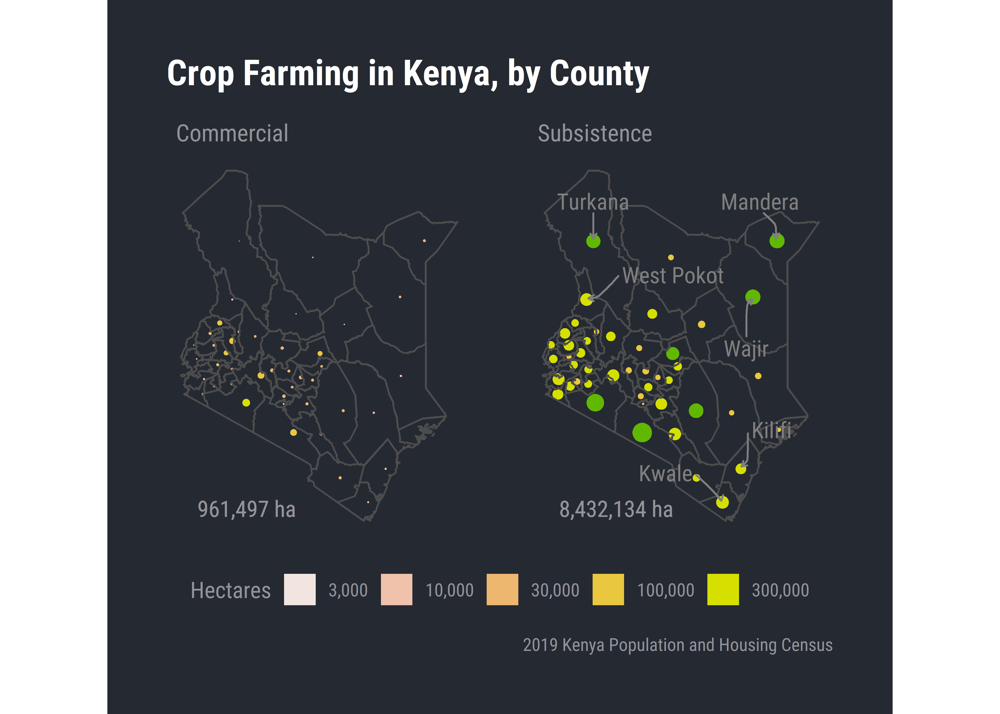
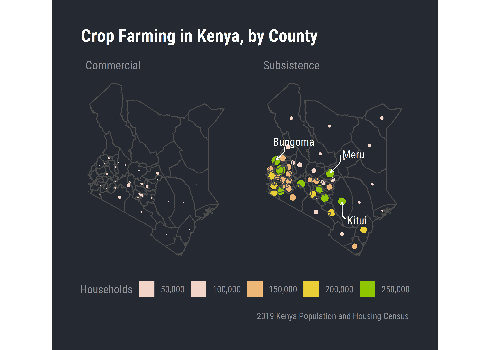
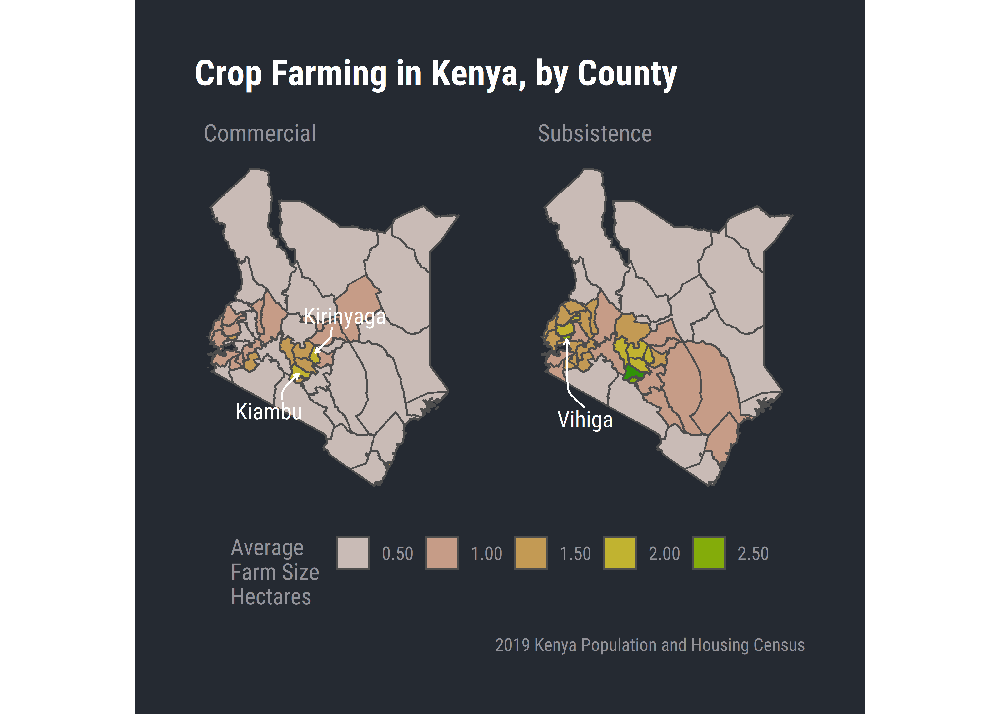
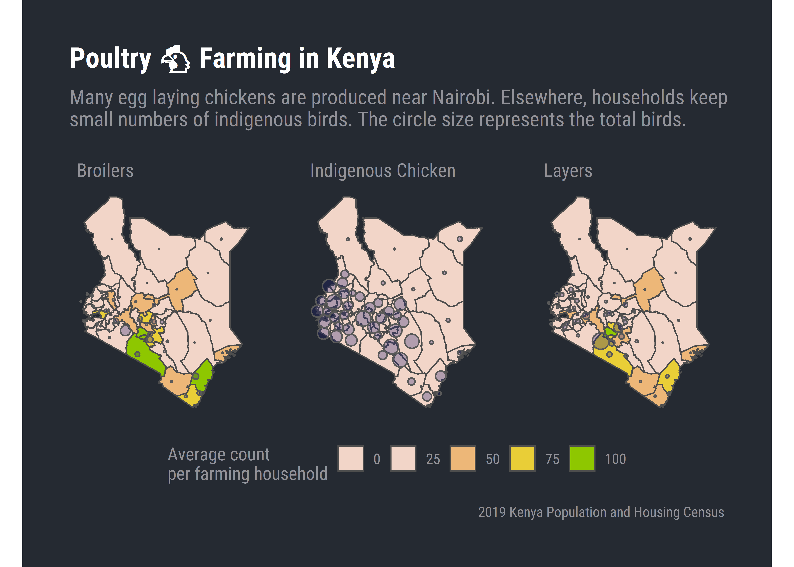
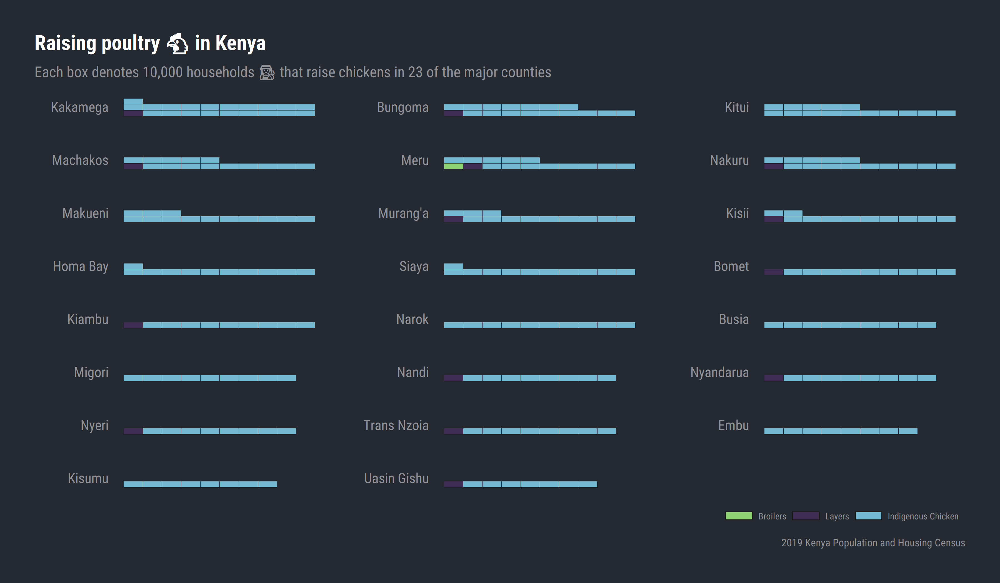
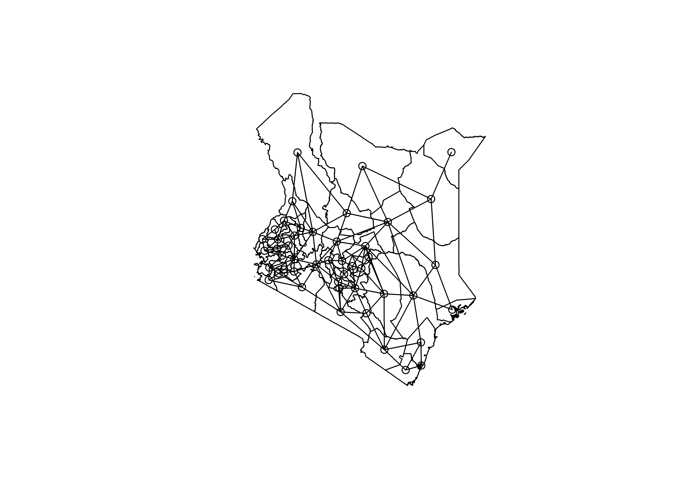
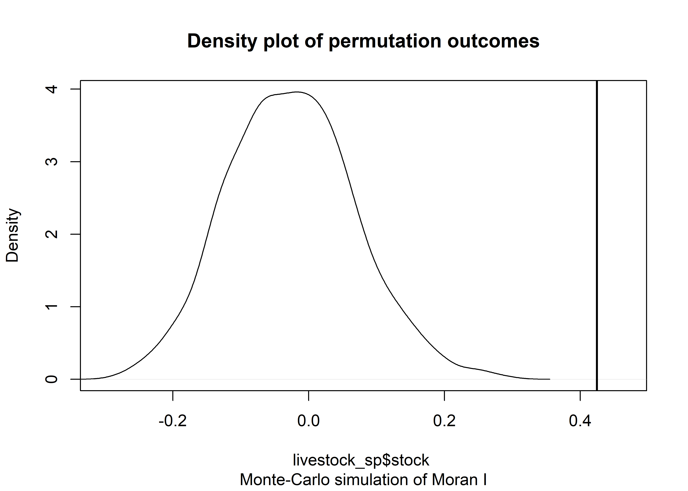
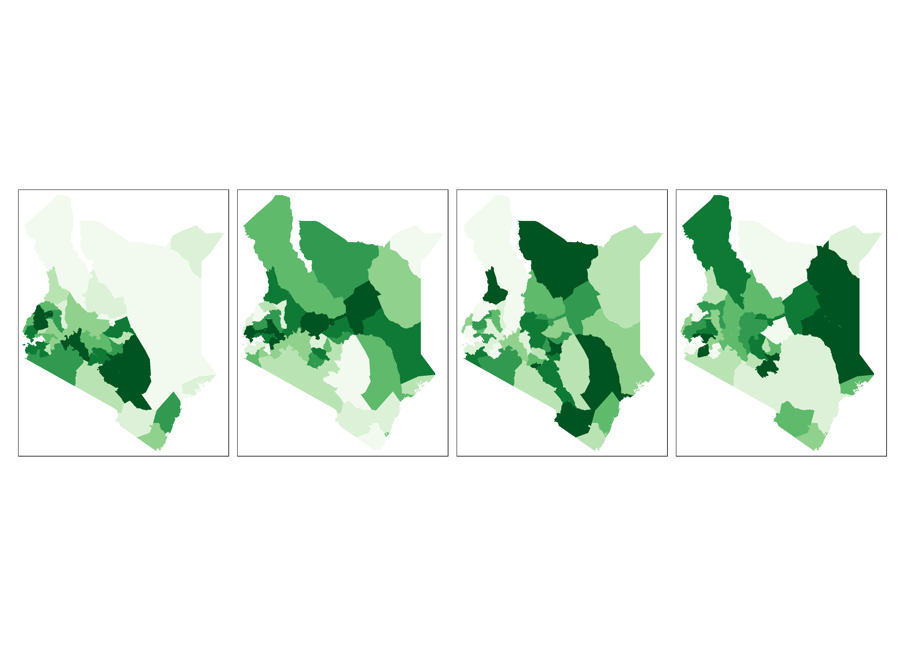

Last updated: 2021-01-20
Checks: 7 0
Knit directory: myTidyTuesday/
This reproducible R Markdown analysis was created with workflowr (version 1.6.2). The Checks tab describes the reproducibility checks that were applied when the results were created. The Past versions tab lists the development history.
Great! Since the R Markdown file has been committed to the Git repository, you know the exact version of the code that produced these results.
Great job! The global environment was empty. Objects defined in the global environment can affect the analysis in your R Markdown file in unknown ways. For reproduciblity it’s best to always run the code in an empty environment.
The command set.seed(20200907) was run prior to running the code in the R Markdown file. Setting a seed ensures that any results that rely on randomness, e.g. subsampling or permutations, are reproducible.
Great job! Recording the operating system, R version, and package versions is critical for reproducibility.
Nice! There were no cached chunks for this analysis, so you can be confident that you successfully produced the results during this run.
Great job! Using relative paths to the files within your workflowr project makes it easier to run your code on other machines.
Great! You are using Git for version control. Tracking code development and connecting the code version to the results is critical for reproducibility.
The results in this page were generated with repository version 5ad9756. See the Past versions tab to see a history of the changes made to the R Markdown and HTML files.
Note that you need to be careful to ensure that all relevant files for the analysis have been committed to Git prior to generating the results (you can use wflow_publish or wflow_git_commit). workflowr only checks the R Markdown file, but you know if there are other scripts or data files that it depends on. Below is the status of the Git repository when the results were generated:
Ignored files:
Ignored: .Rhistory
Ignored: .Rproj.user/
Ignored: analysis/rsconnect/
Ignored: data/03/
Ignored: fonts/
Ignored: rosm.cache/
Untracked files:
Untracked: Untitled/
Untracked: packages.bib
Unstaged changes:
Modified: analysis/BackboneWatershed.Rmd
Note that any generated files, e.g. HTML, png, CSS, etc., are not included in this status report because it is ok for generated content to have uncommitted changes.
These are the previous versions of the repository in which changes were made to the R Markdown (analysis/2021_01_19_tidy_tuesday.Rmd) and HTML (docs/2021_01_19_tidy_tuesday.html) files. If you’ve configured a remote Git repository (see ?wflow_git_remote), click on the hyperlinks in the table below to view the files as they were in that past version.
| File | Version | Author | Date | Message |
|---|---|---|---|---|
| Rmd | 5ad9756 | opus1993 | 2021-01-20 | wflow_publish(“analysis/2021_01_19_tidy_tuesday.Rmd”) |
| html | 2e2234c | opus1993 | 2021-01-20 | Build site. |
| Rmd | cb85568 | opus1993 | 2021-01-20 | wflow_publish(“analysis/2021_01_19_tidy_tuesday.Rmd”) |
| html | be895af | opus1993 | 2021-01-20 | Build site. |
| Rmd | e2a4824 | opus1993 | 2021-01-20 | wflow_publish(“analysis/2021_01_19_tidy_tuesday.Rmd”) |
| html | 063e320 | opus1993 | 2021-01-20 | Build site. |
| Rmd | e6d9b4b | opus1993 | 2021-01-20 | wflow_publish(“analysis/2021_01_19_tidy_tuesday.Rmd”) |
| html | 92e3a14 | opus1993 | 2021-01-20 | Build site. |
| Rmd | a7ab95e | opus1993 | 2021-01-20 | wflow_publish(“analysis/2021_01_19_tidy_tuesday.Rmd”) |
| html | 0fc9f7b | opus1993 | 2021-01-19 | Build site. |
| Rmd | c27d281 | opus1993 | 2021-01-19 | wflow_publish(“analysis/2021_01_19_tidy_tuesday.Rmd”) |
The data this week was compiled by Shel Kariuki from figures released by the Kenya National Bureau of Statistics in February 2020, originally published in four different pdf files (Volume 1 - Volume 4). Beyond the sample #TidyTuesday sets, I’ve pulled additional agricultural figures from her web data portal and rKenyaCensus package.
the Tidytuesday tweet:
#TidyTuesday Week04
— Jim Gruman (@jim_gruman) January 20, 2021
Poultry 🐔farming 👩🌾in Kenya 🇰🇪
code: https://t.co/ARmfFPwRm6 #RStats #R4DS
Thanks to @Shel_Kariuki for her awesome work on the #rKenyaCensus package pic.twitter.com/gSaaWjiAYY
shapefiles <- rKenyaCensus::KenyaCounties_SHP %>%
sf::st_as_sf() %>%
st_simplify(dTolerance = 1000)
# Distribution of area (hectares) of Agricultural land and Farming Households by purpose of production, County and Sub-County
ag_land <- rKenyaCensus::V4_T2.25 %>%
dplyr::filter(AdminArea == "County") %>%
select(
County, LandSize_Subsistence, LandSize_Commercial,
No.FHS_Subsistence, No.FHS_Commercial
) %>%
mutate(
AvgArea_Subsistence =
if_else(LandSize_Subsistence > 0.1,
No.FHS_Subsistence / LandSize_Subsistence,
NA_real_
),
AvgArea_Commercial =
if_else(LandSize_Commercial > 0.1,
No.FHS_Commercial / LandSize_Commercial,
NA_real_
)
) %>%
pivot_longer(-County,
names_sep = "_",
names_to = c("Metric", "FarmType")
)
ag_area_sf <- shapefiles %>%
inner_join(ag_land, by = "County") %>%
mutate(County = stringr::str_to_title(County))
landsize_dorling <-
cartogram_dorling(
x = filter(ag_area_sf, Metric == "LandSize"),
weight = "value",
k = 0.5,
itermax = 100
)
families_dorling <-
cartogram_dorling(
x = filter(ag_area_sf, Metric == "No.FHS"),
weight = "value",
k = 0.5,
itermax = 100
)subs <- sf::st_drop_geometry(landsize_dorling) %>%
group_by(FarmType) %>%
summarize(Total = sum(value))
landsize_dorling %>%
left_join(subs, by = "FarmType") %>%
mutate(CountyLabel = if_else(ntile(value, 10) > 8, County, NA_character_)) %>%
ggplot(aes(fill = value)) +
geom_sf(color = NA) +
geom_sf(
data = filter(ag_area_sf, Metric == "LandSize"),
color = "grey30", fill = NA, alpha = 0.3
) +
ggrepel::geom_text_repel(
aes(label = CountyLabel, geometry = geometry),
stat = "sf_coordinates",
nudge_x = 0.5,
nudge_y = 0.5,
box.padding = 1,
segment.curvature = -0.1,
segment.ncp = 3,
segment.angle = 20,
arrow = arrow(length = unit(0.02, "npc")),
family = "Roboto Condensed",
size = 4,
min.segment.length = 0,
color = "gray50",
segment.color = "gray50"
) +
coord_sf(label_axes = "----") +
geom_text(aes(label = paste0(scales::comma_format()(Total), " ha")),
x = st_bbox(landsize_dorling)[1] + 0.05 * (st_bbox(landsize_dorling)[3] - st_bbox(landsize_dorling)[1]),
y = st_bbox(landsize_dorling)[2],
hjust = 0,
family = "Roboto Condensed",
size = 4
) +
facet_wrap(~FarmType) +
scale_fill_stepsn(
colors = terrain.colors(5, rev = TRUE),
n.breaks = 5,
label = scales::comma_format(),
trans = "log10", guide = "legend"
) +
labs(
x = NULL, y = NULL, fill = "Hectares",
title = "Crop Farming in Kenya, by County",
caption = "2019 Kenya Population and Housing Census"
) +
theme(
panel.grid.major = element_blank(),
legend.position = "bottom"
)
subs <- sf::st_drop_geometry(families_dorling) %>%
group_by(FarmType) %>%
summarize(Total = sum(value))
families_dorling %>%
left_join(subs, by = "FarmType") %>%
mutate(CountyLabel = if_else(ntile(value, 10) > 7, County, NA_character_)) %>%
ggplot(aes(fill = value)) +
geom_sf(color = NA) +
geom_sf(
data = dplyr::filter(ag_area_sf, Metric == "No.FHS"),
color = "grey30", fill = NA, alpha = 0.3
) +
ggrepel::geom_text_repel(
aes(label = CountyLabel, geometry = geometry),
stat = "sf_coordinates",
nudge_x = 0.5,
nudge_y = 0.5,
box.padding = 1,
segment.curvature = -0.1,
segment.ncp = 3,
segment.angle = 20,
arrow = arrow(length = unit(0.02, "npc")),
family = "Roboto Condensed",
size = 4,
min.segment.length = 0,
colour = "gray50",
segment.colour = "gray50"
) +
coord_sf(label_axes = "----") +
geom_text(aes(label = paste0(scales::comma_format()(Total), " households")),
x = st_bbox(landsize_dorling)[1] + 0.05 * (st_bbox(landsize_dorling)[3] - st_bbox(landsize_dorling)[1]),
y = st_bbox(landsize_dorling)[2],
hjust = 0,
family = "Roboto Condensed",
size = 4
) +
facet_wrap(~FarmType) +
scale_fill_stepsn(
colors = terrain.colors(5, rev = TRUE),
label = scales::comma_format(),
limits = c(5e4, 2.5e5), n.breaks = 5,
guide = "legend"
) +
labs(
x = NULL, y = NULL, fill = "Households",
title = paste0("Farmers ", emo::ji("woman_farmer"), " raising crops in Kenya, by County"),
caption = "2019 Kenya Population and Housing Census"
) +
theme(
panel.grid.major = element_blank(),
legend.position = "bottom"
)
ag_area_sf %>%
filter(Metric == "AvgArea") %>%
mutate(CountyLabel = if_else(ntile(value, 10) > 8, County, NA_character_)) %>%
ggplot() +
geom_sf(aes(fill = value), color = "grey30", alpha = 0.8) +
ggrepel::geom_text_repel(
aes(label = CountyLabel, geometry = geometry),
stat = "sf_coordinates",
nudge_x = 0.5,
nudge_y = 0.5,
box.padding = 1,
segment.curvature = -0.1,
segment.ncp = 3,
segment.angle = 20,
arrow = arrow(length = unit(0.02, "npc")),
family = "Roboto Condensed",
size = 4,
min.segment.length = 0,
colour = "black",
segment.colour = "black"
) +
coord_sf(label_axes = "----") +
facet_wrap(~FarmType) +
scale_fill_stepsn(
colors = terrain.colors(5, rev = TRUE),
n.breaks = 5,
label = scales::label_number(), guide = "legend"
) +
labs(
x = NULL, y = NULL, fill = "Average \nFarm Size \nHectares",
title = "Crop Farming in Kenya, by County",
caption = "2019 Kenya Population and Housing Census"
) +
theme(
panel.grid.major = element_blank(),
legend.position = "bottom"
)
Let’s take a close look at the livestock datasets, and focus first on poultry. As a general rule, broilers are breeds raised commercially for meat and layers are raised commercially for eggs. The meat and eggs are packaged and subsequently sold at markets, often in more urban areas. Indigenous chicken breeds are often fed and raised in small numbers as part of a household.
livestock <- rKenyaCensus::V4_T2.24 %>%
filter(AdminArea == "County") %>%
select(-SubCounty, -AdminArea) %>%
rename(
"Dairy" = "ExoticCattle_Dairy",
"Beef" = "ExoticCattle_Beef",
"Layers" = "ExoticChicken_Layers",
"Broilers" = "ExoticChicken_Broilers"
) %>%
rename_with(~ paste0(., "_stock"), Farming:FishCages)
livestock <- rKenyaCensus::V4_T2.23 %>%
filter(AdminArea == "County") %>%
select(-SubCounty, -AdminArea) %>%
rename(
"Dairy" = "ExoticCattle_Dairy",
"Beef" = "ExoticCattle_Beef",
"Layers" = "ExoticChicken_Layers",
"Broilers" = "ExoticChicken_Broilers"
) %>%
rename_with(~ paste0(., "_households"), Farming:FishCages) %>%
inner_join(livestock, by = "County") %>%
pivot_longer(-County,
names_sep = "_",
names_to = c("Industry", "Metric")
) %>%
pivot_wider(
names_from = "Metric",
values_from = "value"
) %>%
mutate(per_household = stock / households) %>%
remove_missing() %>%
filter(Industry != "Farming") %>% # remove the County subtotals
complete(County, Industry, fill = list(
households = 1,
stock = 1,
per_household = 0.01
))
livestock <- livestock %>%
filter(Industry %in% c("IndigenousChicken", "Layers", "Broilers")) %>%
mutate(Industry = str_replace_all(Industry, "([a-z])([A-Z])", "\\1 \\2"))
stock_ls_dorling <- cartogram_dorling(
x = shapefiles %>%
inner_join(livestock, by = "County"),
weight = "stock",
k = 1,
itermax = 100
)
shapefiles %>%
inner_join(livestock, by = "County") %>%
mutate(Metric = "per_household") %>%
group_by(Industry, Metric) %>%
mutate(CountyLabel = if_else(ntile(per_household, 10) > 8, County, NA_character_)) %>%
ungroup() %>%
ggplot() +
geom_sf(aes(fill = per_household), color = "grey30") +
scale_fill_stepsn(
colors = terrain.colors(5, rev = TRUE),
n.breaks = 5, limits = c(0, 100),
label = scales::label_number(), guide = "legend"
) +
geom_sf(
data = stock_ls_dorling,
fill = "midnightblue",
# color = NULL,
alpha = 0.3
) +
coord_sf(label_axes = "----") +
guides(size = guide_legend()) +
facet_wrap(~Industry, ncol = 3) +
labs(
x = NULL, y = NULL, fill = "Average count \nper farming household",
title = paste0("Poultry ", emo::ji("chicken"), " Farming in Kenya"),
subtitle = "Many egg laying chickens are produced near Nairobi. Elsewhere, households keep \nsmall numbers of indigenous birds. The circle size represents the total birds.",
caption = "2019 Kenya Population and Housing Census"
) +
theme(
panel.grid.major = element_blank(),
legend.position = "bottom"
)
Consider adding a waffle plot here - something meaningful about farming livelihoods within each county, for the three kinds of poultry, showing the categories of chickens 🐔 and farmers 👩🌾
p1 <- livestock %>%
mutate(
County = stringr::str_to_title(County),
Farms = round(households / 10000),
Industry = fct_reorder(Industry, c("Broilers", "Layers", "Indigenous Chicken"))
) %>%
group_by(County = fct_lump(County, 23, w = Farms), Industry) %>%
summarize(
Farms = sum(Farms),
.groups = "drop"
) %>%
mutate(County = fct_reorder(County, Farms, .fun = sum, .desc = TRUE)) %>%
filter(County != "Other") %>%
ggplot(aes(fill = Industry, group = Industry, values = Farms)) +
geom_waffle(color = "gray10", n_rows = 10, flip = TRUE) +
facet_wrap(~County,
ncol = 3, strip.position = "left",
shrink = TRUE
) +
scale_fill_manual(
values = ipsum_pal()(4)[2:4],
name = NULL
) +
# coord_equal(ratio = .1) +
theme(
strip.text.y.left = element_text(
angle = 0,
vjust = 0,
hjust = 1,
family = "Roboto Condensed"
),
strip.background = element_blank(),
panel.grid.major = element_blank(),
panel.grid.minor = element_blank(),
axis.ticks = element_blank(),
axis.text.x = element_blank(),
axis.text.y = element_blank(),
legend.position = "bottom",
legend.direction = "horizontal",
legend.justification = 1,
legend.text = element_text(size = 8),
legend.title = element_text(size = 8)
) +
guides(fill = guide_legend(
keyheight = unit(0.05, "cm"),
keywidth = unit(0.9, "cm")
)) +
labs(
title = paste0("Raising poultry ", emo::ji("chicken"), " in Kenya"),
subtitle = paste0("Each box denotes 10,000 households ", emo::ji("farmer"), " that raise chickens in 23 of the major counties"),
caption = "2019 Kenya Population and Housing Census"
)
ggsave(p1,
filename = here::here("docs", "assets", "PoultryWaffle.png"),
device = "png",
width = 12,
height = 7
)knitr::include_graphics("assets/PoultryWaffle.png", error = FALSE)
At this point in the data exploration, I couldn’t help but ask what the relationship might be between commercial farming and the types of livestock. The patterns exhibited on the maps seem to infer a relationship, but let’s see what we can do to quantify it with spatial autocorrelation tests.
Pick any two counties that are neighbors - with a shared border - and the chances are they’ll be more similar than any two random counties. This could be a problem when using statistical models that assume, conditional on the model, that the data points are independent.
The spdep package has functions for measures of spatial correlation, also known as spatial dependency. Computing these measures first requires we to work out which regions are neighbors via the poly2nb() function, short for “polygons to neighbors”. The result is an object of class nb. Then we can compute the test statistic and run a significance test on the null hypothesis of no spatial correlation. The significance test can either be done by Monte-Carlo or theoretical models.
In this example you’ll use the Moran “I” statistic to test the spatial correlation of the sheep population and commercial farming operations.
# Make neighbor list
county_nb <- poly2nb(rKenyaCensus::KenyaCounties_SHP)
# Get center points of each County
county_centers <- coordinates(rKenyaCensus::KenyaCounties_SHP)
# Show the connections
plot(rKenyaCensus::KenyaCounties_SHP)
plot(county_nb, county_centers, add = TRUE)
The hypothesis we are testing states that “the income values are randomly distributed across counties following a completely random process”. There are two methods to testing this hypothesis: an analytical method and a Monte Carlo method. We’ll explore both approaches in the following examples.
First, the analytical method:
livestock_sp <- sf::as_Spatial(shapefiles %>%
inner_join(livestock, by = "County") %>%
filter(Industry == "Indigenous Chicken"),
IDs = County
)
# Run a Moran I test on total egg laying chickens
moran.test(
x = livestock_sp$stock,
listw = nb2listw(county_nb, style = "W", zero.policy = TRUE), # spatial weights for neighbors lists
alternative = "greater"
)
Moran I test under randomisation
data: livestock_sp$stock
weights: nb2listw(county_nb, style = "W", zero.policy = TRUE)
Moran I statistic standard deviate = 4.7644, p-value = 9.47e-07
alternative hypothesis: greater
sample estimates:
Moran I statistic Expectation Variance
0.424583659 -0.021739130 0.008775632 Moran’s I values range from -1 to 1, and 1 indicates a strong spatial autocorrelation. In our example, we have a Moran’s I value 0.476. Usually, when the p-value is very small it’s common practice to report it as < 0.001, which is considered statistically significant. Therefore, we would reject the null hypothesis of global spatial randomness and in favor of spatial autocorrelation in listing prices. Note that the approach above is a one-sided statistical test, and that ArcMap and other software apply the two-sided variety by default.
Second, the Monte Carlo method:
The analytical approach to the Moran’s I analysis benefits from being fast. But it may be sensitive to irregularly distributed polygons. A safer approach to hypothesis testing is to run an MC simulation using the moran.mc() function. The moran.mc function takes an extra argument n, the number of simulations.
MC <- moran.mc(
x = livestock_sp$stock,
listw = nb2listw(county_nb, style = "W", zero.policy = TRUE), # spatial weights for neighbors lists
alternative = "greater",
nsim = 999
)
MC
Monte-Carlo simulation of Moran I
data: livestock_sp$stock
weights: nb2listw(county_nb, style = "W", zero.policy = TRUE)
number of simulations + 1: 1000
statistic = 0.42458, observed rank = 1000, p-value = 0.001
alternative hypothesis: greaterThe MC simulation generates a very small p-value, 0.001. This is not surprising given that the values are strongly clustered. We can see the results graphically by passing the Moran’s I model to the plot function:
plot(MC)
The curve shows the distribution of Moran I values we could expect had the incomes been randomly distributed across the counties. Note that our observed statistic, 0.425, falls way to the right of the distribution suggesting that the values are clustered (a positive Moran’s I value suggests clustering whereas a negative Moran’s I value suggests dispersion).
Now, had the Moran’s I statistic been negative (suggesting a dispersed pattern), you would probably want to set the alternative argument to less thus giving you the fraction of simulated I values more dispersed than your observed I value.
A visual exercise that you can perform to assess how “typical” or “atypical” your pattern may be relative to a randomly distributed pattern is to plot your observed pattern alongside a few simulated patterns generated under the null hypothesis.
set.seed(131)
livestock_sp$rand1 <- sample(livestock_sp$stock, length(livestock_sp$stock), replace = FALSE)
livestock_sp$rand2 <- sample(livestock_sp$stock, length(livestock_sp$stock), replace = FALSE)
livestock_sp$rand3 <- sample(livestock_sp$stock, length(livestock_sp$stock), replace = FALSE)
tmap::tm_shape(livestock_sp) +
tmap::tm_fill(
col = c("stock", "rand1", "rand2", "rand3"),
style = "quantile", n = 8, palette = "Greens",
legend.show = FALSE
) +
tmap::tm_facets(nrow = 1)
Can you tell the difference between our observed chicken population distribution and those generated from a completely random process? The map on the left is our observed distribution. The three maps on the right are realizations of a completely random process.
sessionInfo()R version 4.0.3 (2020-10-10)
Platform: x86_64-w64-mingw32/x64 (64-bit)
Running under: Windows 10 x64 (build 19041)
Matrix products: default
locale:
[1] LC_COLLATE=English_United States.1252
[2] LC_CTYPE=English_United States.1252
[3] LC_MONETARY=English_United States.1252
[4] LC_NUMERIC=C
[5] LC_TIME=English_United States.1252
attached base packages:
[1] stats graphics grDevices utils datasets methods base
other attached packages:
[1] rKenyaCensus_0.0.2 spdep_1.1-5 spData_0.3.8 sp_1.4-5
[5] emo_0.0.0.9000 cartogram_0.2.2 sf_0.9-7 tweetrmd_0.0.8
[9] tidytuesdayR_1.0.1 forcats_0.5.0 stringr_1.4.0 dplyr_1.0.3
[13] purrr_0.3.4 readr_1.4.0 tidyr_1.1.2 tibble_3.0.4
[17] tidyverse_1.3.0 hrbrthemes_0.8.6 waffle_1.0.1 ggplot2_3.3.3
[21] extrafont_0.17 workflowr_1.6.2
loaded via a namespace (and not attached):
[1] readxl_1.3.1 backports_1.2.1 systemfonts_0.3.2.9000
[4] lwgeom_0.2-5 plyr_1.8.6 splines_4.0.3
[7] crosstalk_1.1.1 leaflet_2.0.4.1 usethis_2.0.0
[10] digest_0.6.27 htmltools_0.5.1 gdata_2.18.0
[13] fansi_0.4.2 magrittr_2.0.1 modelr_0.1.8
[16] gmodels_2.18.1 R.utils_2.10.1 extrafontdb_1.0
[19] colorspace_2.0-0 rvest_0.3.6 ggrepel_0.9.1
[22] leafem_0.1.3 haven_2.3.1 xfun_0.20
[25] rgdal_1.5-19 crayon_1.3.4 jsonlite_1.7.2
[28] glue_1.4.2 stars_0.5-0 gtable_0.3.0
[31] R.cache_0.14.0 Rttf2pt1_1.3.8 abind_1.4-5
[34] scales_1.1.1 DBI_1.1.1 Rcpp_1.0.6
[37] viridisLite_0.3.0 units_0.6-7 DT_0.17
[40] htmlwidgets_1.5.3 httr_1.4.2 RColorBrewer_1.1-2
[43] ellipsis_0.3.1 XML_3.99-0.5 pkgconfig_2.0.3
[46] R.methodsS3_1.8.1 farver_2.0.3 sass_0.3.0
[49] dbplyr_2.0.0 deldir_0.2-9 here_1.0.1
[52] tidyselect_1.1.0 labeling_0.4.2 rlang_0.4.10
[55] later_1.1.0.1 tmaptools_3.1-1 munsell_0.5.0
[58] cellranger_1.1.0 tools_4.0.3 cli_2.2.0
[61] generics_0.1.0 broom_0.7.3 evaluate_0.14
[64] yaml_2.2.1 rematch2_2.1.2 leafsync_0.1.0
[67] knitr_1.30 fs_1.5.0 nlme_3.1-151
[70] whisker_0.4 R.oo_1.24.0 xml2_1.3.2
[73] compiler_4.0.3 rstudioapi_0.13 png_0.1-7
[76] curl_4.3 e1071_1.7-4 reprex_0.3.0
[79] bslib_0.2.3.9000 stringi_1.5.3 ps_1.5.0
[82] gdtools_0.2.3 memuse_4.1-0 lattice_0.20-41
[85] Matrix_1.3-2 classInt_0.4-3 styler_1.3.2
[88] vctrs_0.3.6 pillar_1.4.7 LearnBayes_2.15.1
[91] lifecycle_0.2.0 jquerylib_0.1.3 raster_3.4-5
[94] httpuv_1.5.5 R6_2.5.0 promises_1.1.1.9001
[97] KernSmooth_2.23-18 gridExtra_2.3 codetools_0.2-18
[100] dichromat_2.0-0 boot_1.3-25 MASS_7.3-53
[103] gtools_3.8.2 assertthat_0.2.1 rprojroot_2.0.2
[106] withr_2.4.0 expm_0.999-6 parallel_4.0.3
[109] hms_1.0.0 grid_4.0.3 coda_0.19-4
[112] class_7.3-17 rmarkdown_2.6.6 packcircles_0.3.4
[115] git2r_0.28.0 tmap_3.3 base64enc_0.1-3
[118] lubridate_1.7.9.2